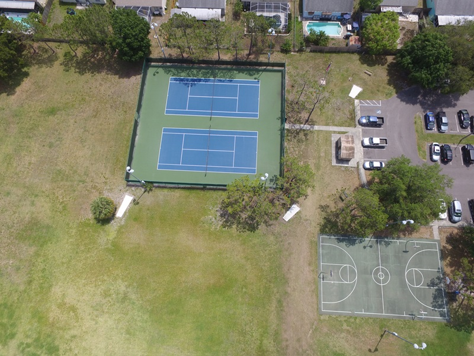

Back to Portfolios
Back to Portfolios

MATLAB Intersection exercise
Purpose: Photogrammetry and UAV Mapping Assignment Semester: 1st (Fall) Project date: 30 October 2023 Skills: MATLAB Programming, Photogrammetry, Intersection, AerotriangulationObjective:
The objective of this code is to refine the 3D coordinates of points using camera calibration parameters and exterior orientation (EO) parameters through a nonlinear optimization approach.Methodology:
The code reads 2D point data from 'intersection_pt.txt', sets up camera calibration and initial EO parameters, computes projection matrices, and iteratively refines 3D coordinates using the Gauss-Newton method. This involves computing reprojection errors and updating the coordinates until convergence or a maximum number of iterations is reached.Results:
The final refined 3D coordinates for each point are displayed, showing successful convergence for all points with minimal reprojection error changes.

MATLAB code
- The code starts by clearing the command window (clc), clearing all variables (clear all), setting the format to long (format long), and defining some initial parameters.
It reads data from a file named 'intersection_pt.txt' using the readmatrix function.
The camera calibration parameters (focal length, image width, and height) are set, and initial exterior orientation (EO) parameters for two cameras (EO1 and EO2) are provided.
clc; clear all; format long; f0_mm=3.61; %mm f0_px=3.61/6.16*4000; %pixel data=readmatrix('intersection_pt.txt'); focal=f0_px; % update W=4000; H=3000; pt_id=data(:,1); x1=data(:,2)-W/2; y1=H/2-data(:,3); x2=data(:,4)-W/2; y2=H/2-data(:,5); [m,n]=size(data); EO1= [333121.67;3102935.88;67.45;-0.09*pi/180;-14.58*pi/180;-87.24*pi/180]; %EO1 EO2= [333143.66;3102930.81;64.39;3.67*pi/180;-16.84*pi/180;-85.88*pi/180]; %EO2 XL1=EO1(1,1); YL1=EO1(2,1); ZL1=EO1(3,1); o1=EO1(4,1); p1=EO1(5,1); k1=EO1(6,1); XL2=EO2(1,1); YL2=EO2(2,1); ZL2=EO2(3,1); o2=EO2(4,1); p2=EO2(5,1); k2=EO2(6,1);Matrices M1 and M2 are computed based on the EO parameters for the two cameras. These matrices represent the projection from the 3D world coordinates to 2D image coordinates.
M1=[cos(p1)*cos(k1) cos(o1)*sin(k1)+sin(o1)*sin(p1)*cos(k1) sin(o1)*sin(k1)-cos(o1)*sin(p1)*cos(k1);
-cos(p1)*sin(k1) cos(o1)*cos(k1)-sin(o1)*sin(p1)*sin(k1) sin(o1)*cos(k1)+cos(o1)*sin(p1)*sin(k1);
sin(p1) -sin(o1)*cos(p1) cos(o1)*cos(p1)];
M2=[cos(p2)*cos(k2) cos(o2)*sin(k2)+sin(o2)*sin(p2)*cos(k2) sin(o2)*sin(k2)-cos(o2)*sin(p2)*cos(k2);
-cos(p2)*sin(k2) cos(o2)*cos(k2)-sin(o2)*sin(p2)*sin(k2) sin(o2)*cos(k2)+cos(o2)*sin(p2)*sin(k2);
sin(p2) -sin(o2)*cos(p2) cos(o2)*cos(p2)];
The code initializes some variables and sets up an initial approximation of the 3D coordinates (X_init, Y_init, Z_init).
X_init=zeros(m,1); Y_init=zeros(m,1); Z_init=zeros(m,1); result=zeros(m,3); for i=1:m u1=M1(1,1)*x1(i,1)+M1(2,1)*y1(i,1)+M1(3,1)*-focal; v1=M1(1,2)*x1(i,1)+M1(2,2)*y1(i,1)+M1(3,2)*-focal; w1=M1(1,3)*x1(i,1)+M1(2,3)*y1(i,1)+M1(3,3)*-focal; C1=u1/w1; % C1 C2=v1/w1; % C2 u2=M2(1,1)*x2(i,1)+M2(2,1)*y2(i,1)+M2(3,1)*-focal; v2=M2(1,2)*x2(i,1)+M2(2,2)*y2(i,1)+M2(3,2)*-focal; w2=M2(1,3)*x2(i,1)+M2(2,3)*y2(i,1)+M2(3,3)*-focal; C3=u2/w2; % C3 C4=v2/w2; % C4 B=[1 0 -C1; 0 1 -C2; 1 0 -C3; 0 1 -C4]; % B f=[XL1-C1*ZL1;YL1-C2*ZL1;XL2-C3*ZL2;YL2-C4*ZL2;]; % f W=eye(4,4); N=B'*W*B; t=B'*W*f; del=inv(N)*t; % initial approximation of X, Y, Z are the elements of del X0=del(1,1); Y0=del(2,1); Z0=del(3,1);For each point in the input data, the code iteratively refines the 3D coordinates using a nonlinear optimization approach (Gauss-Newton method). The loop computes the reprojection errors and updates the 3D coordinates until convergence (the change in the objective function is below a threshold) or a maximum number of iterations is reached.
L=[x1(i,1);y1(i,1);x2(i,1);y2(i,1)];
L0=L;
par_0=[X0;Y0;Z0];
keep_going=1;
last_phi=10;
iter=0;
while keep_going==1
syms xx1 yy1 xx2 yy2 X Y Z
U1=M1(1,1)*xx1+M1(2,1)*yy1+M1(3,1)*-focal;
V1=M1(1,2)*xx1+M1(2,2)*yy1+M1(3,2)*-focal;
W1=M1(1,3)*xx1+M1(2,3)*yy1+M1(3,3)*-focal;
U2=M2(1,1)*xx2+M2(2,1)*yy2+M2(3,1)*-focal;
V2=M2(1,2)*xx2+M2(2,2)*yy2+M2(3,2)*-focal;
W2=M2(1,3)*xx2+M2(2,3)*yy2+M2(3,3)*-focal;
FF=[(X-XL1)-(Z-ZL1)*U1/W1;
(Y-YL1)-(Z-ZL1)*V1/W1;
(X-XL2)-(Z-ZL2)*U2/W2;
(Y-YL2)-(Z-ZL2)*V2/W2];
BB=jacobian(FF, [X, Y, Z]); % BB
AA=jacobian(FF, [xx1, yy1, xx2, yy2]); % AA
X=par_0(1,1);
Y=par_0(2,1);
Z=par_0(3,1);
xx1=L0(1,1);
yy1=L0(2,1);
xx2=L0(3,1);
yy2=L0(4,1);
F=eval(FF); % F
B=eval(BB); % B
A=eval(AA); % A
Q=inv(W);
Qe=A*Q*A';
We=inv(Qe);
f=-F-A*(L-L0); % f
N=B'*We*B; % N
t=B'*We*f; % t
delta=inv(N)*t; % delta
v=inv(We)*f; % v
phi=v'*W*v; % phi
obj=abs((last_phi-phi)/last_phi)
if (obj<0.0001)
keep_going=0
disp('we have converged');
end
L0=L+v;
par_0=par_0+delta;
if (obj<0.0001)
result(i,:)=par_0;
end
if (iter>100)
keep_going=0;
disp('too many iterations');
end
last_phi=phi;
iter=iter+1;
end
end
The final refined 3D coordinates for each point are stored in the result matrix.
The final results (refined 3D coordinates) are displayed at the end of the code.
The variable obj represents the change in the objective function (reprojection error) during each iteration.
The loop terminates when the change in the objective function is below a specified threshold (obj < 0.0001).
Messages indicating whether the optimization has converged or if there were too many iterations are displayed.
result
obj =
0.999999999989418
obj =
0.134638709505217
obj =
1.373844996570764e-06
keep_going =
0
we have converged
obj =
0.999999999950132
obj =
0.164467893903101
obj =
3.504788708687500e-06
keep_going =
0
we have converged
obj =
0.999999999727284
obj =
0.214652242854700
obj =
1.046073179785581e-05
keep_going =
0
we have converged
obj =
0.999999999590208
obj =
0.082423481245599
obj =
4.708073160023642e-06
keep_going =
0
we have converged
result =
% Point 1: X - 0.333158 m Y - 3.102916 m Z - 0.0000022 m
% Point 2: X - 0.333176 m Y - 3.102961 m Z - 0.0000009 m
% Point 3: X - 0.333158 m Y - 3.102953 m Z - 0.0000040 m
% Point 4: X - 0.333176 m Y - 3.102923 m Z - 0.0000022 m